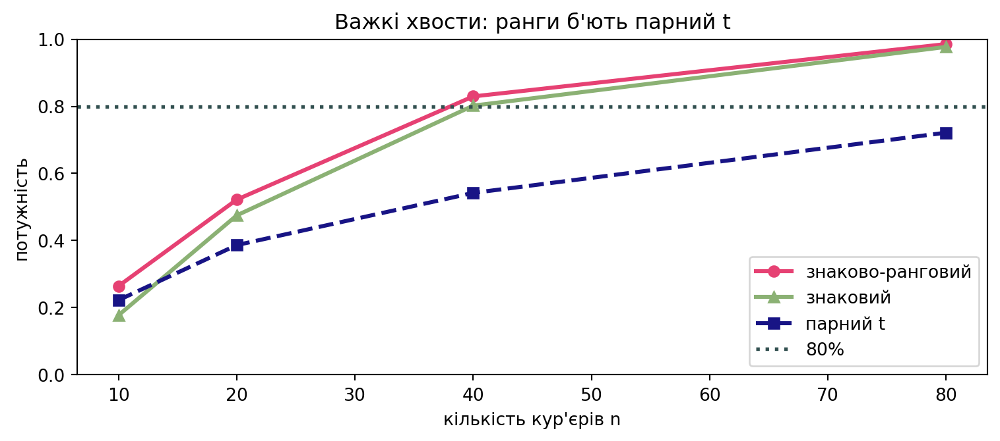
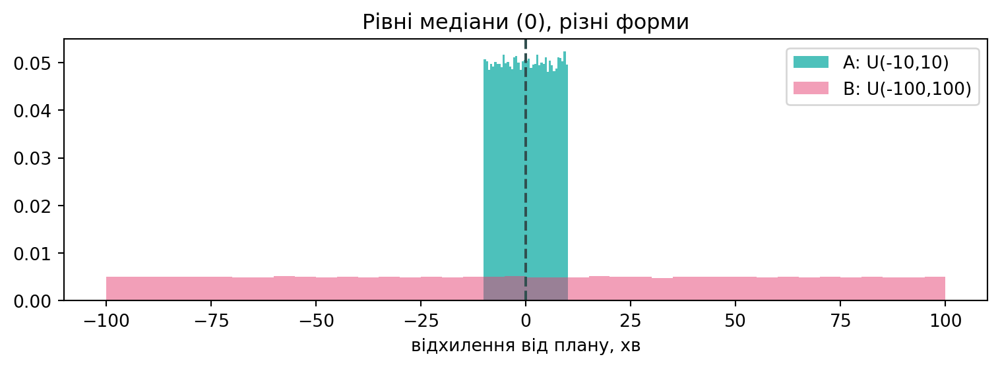

rng = np.random.default_rng(1)
n_c = 24
before = delivery(median=38, sigma=0.25, n=n_c, rng=rng) # хв до
after = before * rng.lognormal(np.log(0.93), 0.10, n_c) # ~7% швидшеПрактика 8
Непараметричні критерії для A/B
Що ми робимо сьогодні
Минулі практики порівнювали групи через середні (\(z\)-, \(t\)-тести) або через категорії (\(\chi^2\)). Але продуктові метрики — час доставки, виторг, тривалість сесії — майже завжди скошені й мають викиди, тож середнє підводить. Сьогодні — родина непараметричних критеріїв, що дивляться на напрямок і порядок, а не на величину:
- знаковий критерій — лише напрямок зміни (біном);
- знаково-ранговий Вілкоксон — ранжує розміри парних змін;
- критерій Манна–Уітні — порівнює дві незалежні групи за рангами.
Будуємо гардрейли для A/B застосунку доставки GreenBowl (той самий, що в Практиках 4–7) і окремо розбираємо головну пастку Манна–Уітні: що буде, якщо медіани рівні, а форми розподілів — ні.
1 Частина I — Знаковий критерій: чи стало швидше?
Кейс. GreenBowl увімкнув оптимізацію маршрутів. Кожен із 24 кур’єрів відпрацював тиждень до і тиждень після. Це парний (крос-овер) дизайн: ті самі кур’єри двічі, тож групи не незалежні —
ttest_indчи Манн–Уітні тут не підходять. Дивимось на різницю \(d_i\) всередині пари.
1.1 Інструмент: sign_test
Найпростіша ідея — викинути величину, лишити знак різниці. Кількість покращень при \(H_0\) поводиться як підкидання чесної монетки: \(T = \#\{d_i > 0\} \sim \text{Binom}(n, \tfrac12)\).
def sign_test(before, after, alpha=0.05):
"""Знаковий критерій: чи зменшився показник (after < before)?"""
d = np.asarray(before, float) - np.asarray(after, float) # >0 => стало швидше
d = d[d != 0] # нулі відкидаємо
n, k = len(d), int((d > 0).sum())
p = binomtest(k, n, 0.5, alternative="greater").pvalue
return {"k": k, "n": n, "p": p,
"verdict": "відхиляємо H0" if p < alpha else "не відхиляємо H0"}
r = sign_test(before, after)
print(f"покращилось {r['k']}/{r['n']} кур'єрів, p = {r['p']:.4f} → {r['verdict']}")покращилось 22/24 кур'єрів, p = 0.0000 → відхиляємо H0Жодного припущення про розподіл — лише незалежність кур’єрів. Ціна: ми ігноруємо, наскільки саме швидше, тож критерій найслабший із трьох.
Код
# Монте-Карло: FPR знакового критерію під H0 (різниці симетричні навколо 0)
fpr = prate(lambda n, r: r.normal(0, 1, n), n=n_c, test="sign")
print(f"FPR знакового критерію (n={n_c}): {fpr['rate']:.3f} "
f"CI={tuple(round(c, 3) for c in fpr['ci'])}")FPR знакового критерію (n=24): 0.017 CI=(0.012, 0.023)2 Частина II — Знаково-ранговий Вілкоксон: додаємо величину
Знаковий критерій викидає інформацію про розмір кожної зміни. Вілкоксон ранжує модулі різниць і повертає їм знаки: \(W = \sum_i \text{rank}(|d_i|)\cdot\text{sign}(d_i)\). Кілька великих покращень тепер переважують багато дрібних — критерій потужніший.
def signed_rank(before, after, alpha=0.05):
"""Знаково-ранговий критерій Вілкоксона (парний)."""
d = np.asarray(before, float) - np.asarray(after, float)
nz = d[d != 0]
W = float(np.sum(rankdata(np.abs(nz)) * np.sign(nz)))
p = wilcoxon(before, after, alternative="greater").pvalue
return {"W": W, "p": p,
"verdict": "відхиляємо H0" if p < alpha else "не відхиляємо H0"}
print("знаковий :", sign_test(before, after))
print("знаково-ранговий:", signed_rank(before, after))знаковий : {'k': 22, 'n': 24, 'p': np.float64(1.7940998077392578e-05), 'verdict': 'відхиляємо H0'}
знаково-ранговий: {'W': 230.0, 'p': np.float64(0.0002472400665283203), 'verdict': 'відхиляємо H0'}Код
# Потужність на ВАЖКОХВОСТИХ різницях (Стьюдент, df=2) зі зсувом
sizes = [10, 20, 40, 80]
curves = {t: [prate(lambda n, r: 0.7 + r.standard_t(2, n), nn, test=t)["rate"]
for nn in sizes] for t in ("sr", "sign", "pt")}
fig, ax = plt.subplots(figsize=(8, 3.6))
ax.plot(sizes, curves["sr"], "o-", color=red_pink, lw=2.3, label="знаково-ранговий")
ax.plot(sizes, curves["sign"], "^-", color=green, lw=2.3, label="знаковий")
ax.plot(sizes, curves["pt"], "s--", color=blue, lw=2.3, label="парний t")
ax.axhline(0.8, color=slate, ls=":", lw=2, label="80%")
ax.set_xlabel("кількість кур'єрів n"); ax.set_ylabel("потужність")
ax.set_ylim(0, 1); ax.legend(); ax.set_title("Важкі хвости: ранги б'ють парний t")
plt.tight_layout(); plt.show()
3 Частина III — Манн–Уітні: дві незалежні групи
Кейс. Класичний A/B: половина замовлень іде через старий диспетчер (контроль), половина — через новий (тест). Метрика — час доставки, хв, сильно скошена. Групи незалежні (різні замовлення), тож працює Манн–Уітні.
rng = np.random.default_rng(3)
control = delivery(median=40, sigma=0.5, n=120, rng=rng)
testg = delivery(median=35, sigma=0.5, n=120, rng=rng) # новий швидший3.1 Інструмент: mw_report
def mw_report(a, b, alpha=0.05):
"""Манн–Уітні для двох незалежних груп + розмір ефекту P(a<b)."""
res = mannwhitneyu(a, b, alternative="two-sided")
na, nb = len(a), len(b)
p_a_lt_b = 1 - res.statistic / (na * nb) # P(a<b): a швидший за b
return {"U": float(res.statistic), "p": res.pvalue, "P(a<b)": p_a_lt_b,
"verdict": "відхиляємо H0" if res.pvalue < alpha else "не відхиляємо H0"}
print(mw_report(control, testg)){'U': 8164.0, 'p': np.float64(0.07318944472031981), 'P(a<b)': np.float64(0.4330555555555555), 'verdict': 'не відхиляємо H0'}P(a<b) — «ймовірність переваги»: частка пар, де контрольне замовлення довше за тестове. \(0.5\) означає «ефекту немає».
Код
skew = lambda n, r: delivery(40, 0.6, n, r) # один скошений закон
fpr = rate(skew, skew, 80, 80, test="mw") # H0: однакові групи
pw_mw = rate(lambda n, r: delivery(40, 0.6, n, r),
lambda n, r: delivery(34, 0.6, n, r), 80, 80, test="mw")["rate"]
pw_t = rate(lambda n, r: delivery(40, 0.6, n, r),
lambda n, r: delivery(34, 0.6, n, r), 80, 80, test="welch")["rate"]
print(f"FPR MW на скошених рівних групах: {fpr['rate']:.3f} "
f"CI={tuple(round(c, 3) for c in fpr['ci'])}")
print(f"потужність (медіана 40 vs 34): MW={pw_mw:.2f} t(Велча)={pw_t:.2f}")FPR MW на скошених рівних групах: 0.046 CI=(0.038, 0.056)
потужність (медіана 40 vs 34): MW=0.36 t(Велча)=0.324 Частина IV — Пастка форми: рівні медіани, різні форми
Кейс. Новий диспетчер тримає ту саму медіану часу доставки, але робить його набагато мінливішим: частина замовлень приїздить дуже рано, частина — дуже пізно. Модель відхилень від планового часу (хв): \(A \sim U(-10, 10)\) (контроль, рівно), \(B \sim U(-100, 100)\) (новий, «гойдалка»).
rng = np.random.default_rng(5)
A = rng.uniform(-10, 10, 100_000)
B = rng.uniform(-100, 100, 100_000)
print(f"медіана A = {np.median(A):.2f}, медіана B = {np.median(B):.2f}")
print(f"P(A < B) ≈ {np.mean(A < B):.3f}")
fig, ax = plt.subplots(figsize=(8, 3))
ax.hist(A, bins=40, density=True, color=turquoise, alpha=0.8, label="A: U(-10,10)")
ax.hist(B, bins=40, density=True, color=red_pink, alpha=0.5, label="B: U(-100,100)")
ax.axvline(0, color=slate, ls="--"); ax.set_xlabel("відхилення від плану, хв")
ax.legend(); ax.set_title("Рівні медіани (0), різні форми"); plt.tight_layout(); plt.show()медіана A = 0.01, медіана B = -0.24
P(A < B) ≈ 0.499
4.1 Рівні вибірки: чи тримає Манн–Уітні рівень?
gA = lambda n, r: r.uniform(-10, 10, n)
gB = lambda n, r: r.uniform(-100, 100, n)
eq = rate(gA, gB, 30, 30, test="mw", n_exps=3000)
print(f"FPR Манна–Уітні, n=30+30: {eq['rate']:.3f} "
f"CI={tuple(round(c, 3) for c in eq['ci'])}")FPR Манна–Уітні, n=30+30: 0.095 CI=(0.085, 0.106)Медіани рівні, а FPR — близько 10%, удвічі більший за обіцяні 5%. Критерій хибно оголошує різницю, хоча її (за положенням) немає.
4.2 Нерівні вибірки: стає ще гірше
print("nx ny MW t(Велча) Брюннер–Мунцель")
for nx, ny in [(30, 30), (10, 100), (100, 10), (20, 200), (200, 20)]:
mw = rate(gA, gB, nx, ny, test="mw", n_exps=3000)["rate"]
tt = rate(gA, gB, nx, ny, test="welch", n_exps=3000)["rate"]
bm = rate(gA, gB, nx, ny, test="bm", n_exps=3000)["rate"]
print(f"{nx:<4d} {ny:<4d} {mw:5.3f} {tt:5.3f} {bm:5.3f}")nx ny MW t(Велча) Брюннер–Мунцель
30 30 0.095 0.052 0.053
10 100 0.000 0.052 0.055
100 10 0.277 0.062 0.043
20 200 0.000 0.051 0.049
200 20 0.217 0.050 0.055Чек-лист непараметричного A/B
Якщо хоч на одне «ні» — довіряти висновку зарано.